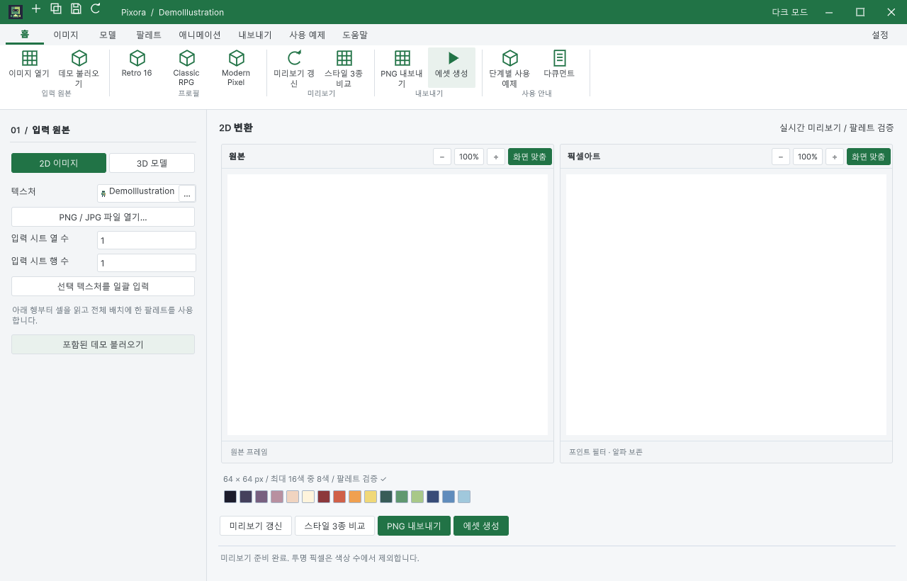
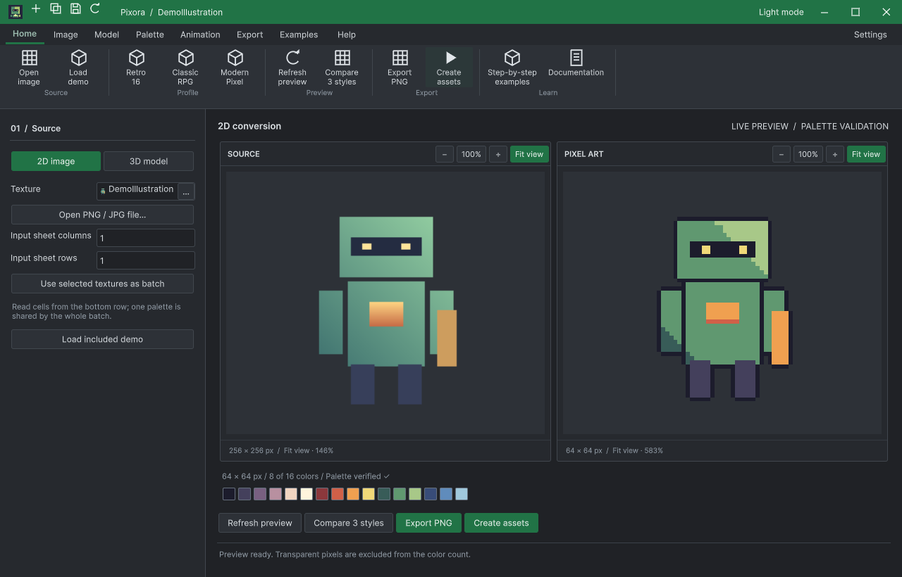

Tracefolio REPORTS & ISSUES
Tracefolio REPORTS & ISSUESPixora 전체 QA에서 재현된 미리보기·새 창·저장 복귀 결함 수정
종료실제 UI에서 빈 미리보기, 새 작업 창 뒤로 가림, 재컴파일 후 빈 창과 파일 저장 후 포커스 손실을 재현했습니다. 수정 뒤 네이티브 조작으로 재검증했습니다.
작업 결과
검증한 Pixora 결함을 수정하고 동일 조건의 실제 조작 회귀 검사를 통과했습니다. 관련 공통 프레임 변경은 TurnRoom 별도 보고서에 구분했습니다.
변경 내용
재현 조건
Windows / Unity 6000.0.83f1 / Built-in. 혼합 설치 전용 QA 프로젝트와 Pixora 단독 설치 QA 프로젝트에서 실행했습니다.
재현 순서
- 2D 데모를 열고 미리보기를 관찰합니다.
- 새 Studio를 생성하고 두 창을 교차 클릭합니다.
- 비어 있는 Studio를 연 채 도메인 재로드합니다.
- PNG 저장 대화상자에서 파일을 저장하거나 Escape로 취소합니다.
- 예제 씬을 이미 열린 씬과 함께 엽니다.
기대 동작
맞춤 미리보기가 실제 텍스처를 표시하고, 여러 Studio가 서로 숨지 않으며, 재로드 후 빈 작업 창도 정상 구성되어야 합니다. 파일 대화상자 후 작업 창이 앞에 있고 기존 씬을 보존해야 합니다.
실제 동작
수정 전 실제 텍스처는 존재했지만 ScrollView 내부 viewport/canvas/image 높이가 0이라 빈 화면이었습니다. 새 창 생성 뒤 직전 창이 Unity 기본 창 아래로 밀렸습니다. Unity의 해제된 _source 참조에서 UnassignedReferenceException이 발생했습니다. PNG 저장 뒤 기본 창이 앞에 올라왔습니다.
원인
미리보기 루트 높이와 내부 viewport의 실제 할당 높이가 연결되지 않았습니다. 창 순서 보호는 같은 제품을 제외했고 새 창 생성이 보호 관찰 이전에 발생했습니다. UnityEngine.Object 참조에 C# null 조건 접근을 사용했습니다. 파일 대화상자의 기본 창 활성화를 작업 창으로 복귀시키는 단계가 없었습니다. 소스와 실제 오류·창 순서·레이아웃 값으로 확인했습니다.
적용 내용
루트 GeometryChanged에서 실제 viewport 높이를 연결하고 맞춤 보기의 불필요한 스크롤바를 숨겼습니다. 새 창 생성 직전의 실제 전경/순서를 관찰해 조건에 맞는 직전 창만 보존합니다. Unity 참조는 명시적인 != null 검사로 바꿨습니다. 파일 선택 8곳을 공통 FileDialog로 감싸 작업 창에 복귀시킵니다.
기본 제공 Classic RPG/Modern Pixel 프로필의 남아 있던 디더링 값을 공장 기본값과 같은 0으로 맞춰 원하지 않는 점무늬를 제거했습니다. 명시적으로 지정하는 디더링 기능은 유지합니다. 예제 SceneView 프레이밍과 실제 2×2 입력 프레임 변화도 바로잡았습니다.
검증


72개 부착된 미리보기 경우·408개 검사, 실제 새 창·교차 클릭·복제·개별 닫기·재로드, 파일 저장·취소·7개 임포터 검사와 Additive 씬 열기/프레이밍을 통과했습니다. 10개 씬 Play 실행 중 3개 애니메이션 씬의 Sprite가 실제 바뀌었습니다.
레이아웃 검사 · PNG 임포터 · 실제 Play 실행
남은 사항
Windows / Unity 6000.0.83f1 / Built-in에서 확인했습니다. 다른 운영체제·렌더 파이프라인·고DPI와 모든 외부 모델·셰이더 호환은 미확인입니다. DataTable 제품 소스는 수정하지 않았으며, 이전 작업에서 남은 DataTable 역사적 문서 캡처/소스 해시 불일치 206건은 이번에 통과 처리하지 않았습니다. 제품 브랜치는 codex/turnroom-integration이며 main 병합이나 Asset Store 출시는 수행하지 않았습니다.
작업 시간
- 제안 시간: 90–150분. 샘플 10개 구성, 실제 Unity 조작 QA, 문서·HTML 결과 보고까지를 범위로 제안했습니다.
- 실제로 완료된 시간: 구현·필수 QA·프로젝트 푸시까지 2시간 21분 47초. 시작 2026-10-30 03:42:35 KST, 프로젝트 푸시 완료 2026-10-30 06:04:22 KST. 중앙 보고서 생성·배포는 이후 진행하며 전체 종료 시각은 최종 채팅에 별도로 기록합니다.
- XERJ: 사용 — 실제 XERJ Search로 ApplyTutorialStep·BuildDocumentHeader·WindowShelf 후보를 조회하고 현재 소스와 대조했습니다. 이전 체크아웃 경로를 보던 journal 문제를 저장소 경로 해시별 인덱스로 분리해 복구한 뒤 Index와 FileDialog 검색을 실행했습니다. 자동 watcher 실행은 주장하지 않습니다.